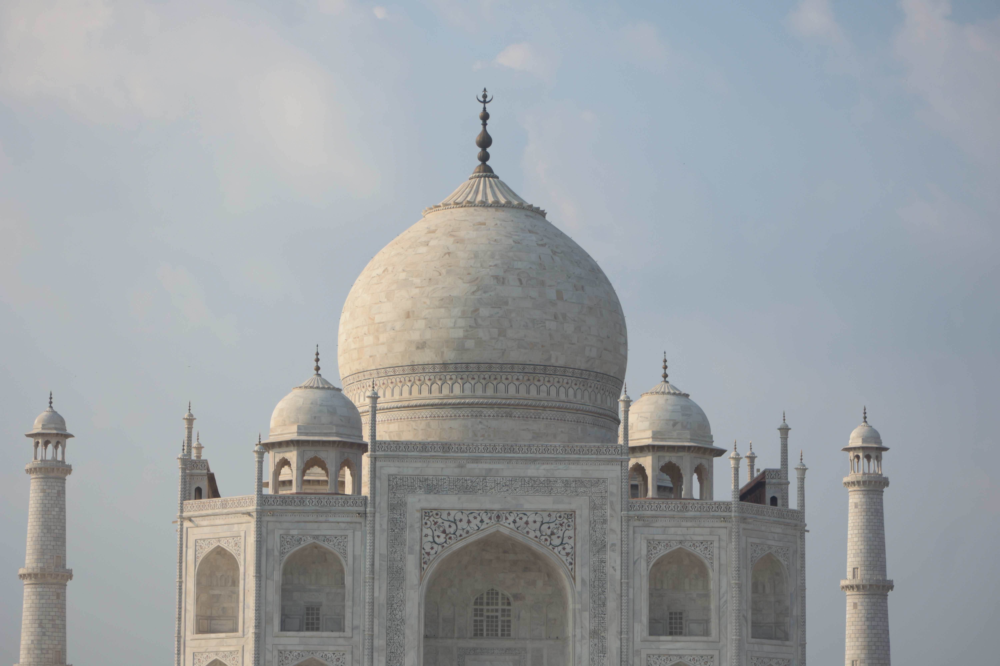

Sl.no
Images
Heading
Description
1

Tajmahal
The Taj Mahal (/ˌtɑːdʒ məˈhɑːl, ˌtɑːʒ-/; lit. 'Crown of the Palace')[4][5][6] is an ivory-white marble mausoleum on the right bank of the river Yamuna in Agra, Uttar Pradesh, India. It was commissioned in 1631 by the fifth Mughal emperor, Shah Jahan (r. 1628–1658) to house the tomb of his beloved wife, Mumtaz Mahal; it also houses the tomb of Shah Jahan himself.